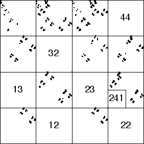

| Here we test what the length 2 address occupancy data implies about the occupancy
of longer address strings. |
| Given a driven IFS, we begin by |
| noting the empty length 2 address squares (those corresponding to
forbidden pairs), |
| then finding the empty length 3 address squares (those corresponding
to forbidden triples), |
| the empty length 4 address squares (those corresponding to forbidden
quadruples), |
| and so on. |
|
| If each forbidden triple, quadruple, ... contains one of the
forbidden pairs, then the underlying process has a one-step memory. |
| If some do not, the memory is longer. |
| For example, the driven IFS below has |
| empty length 2 squares | forbidden transitions |
| 12 | 2 → 1 |
| 22 | 2 → 2 |
| 13 | 3 → 1 |
| 23 | 3 → 2 |
| 32 | 2 → 3 |
| 44 | 4 → 4 |
|
| In the driven IFS note the square 241 is empty. This corresponds
to the transitions |
| 1 → 4 and 4 → 2, |
| neither of which is forbidden. Consequently,
the system generating this IFS appears to remember more than its immediate past. |
|  |
| Of course, any measured time series is of finite length. Consequently,
when we see an empty subsquare, we should ask whether it is empty |
| because its address
is excluded in the dynamical process driving the IFS, or |
| because the time series is not long enough. |
| That is, if we had more data, would the subsquare eventually be visited. |
| Obviously, the smaller the subsquare, the more data is needed. |
| Here is a simple calculation, illustrating how certain
we are that the empty square 241 represents a real exclusion. |